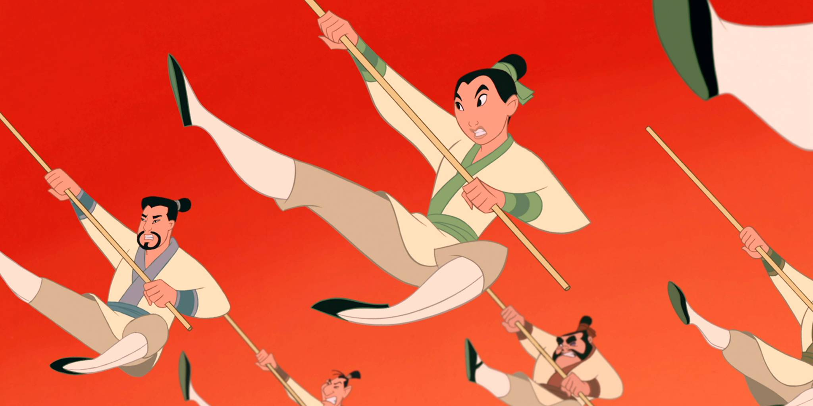

About Mulan
Mulan disguises herself as a boy named Ping so she can join the Chinese army. With the help of her friends, she defeats the Huns and saves the life of the Emperor of China.
Mulan training with her fellow soldiers.
Characteristics
- She is very brave
- She is heroic
- She is loyal
Friends
Mulan's friends help her with her training and during the battle against the Huns. Click on the links below to read more about them: